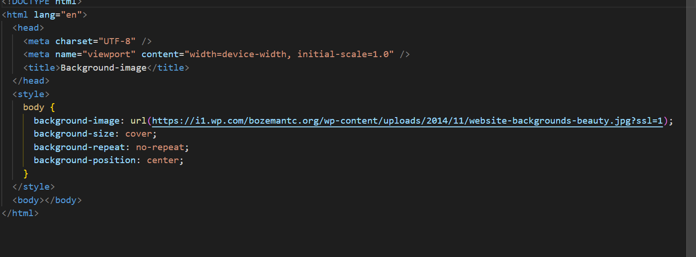

HTML tag is just opening or closing entity. For example: <p> and</p> are called HTML tags: HTML element encompasses opening tag, closing tag, content (optional for content-less tags) Eg: <p>This is the content</p>: This complete thing is called a HTML element
HTML Tags: Tags are the starting and ending parts of an HTML element. They begin with < symbol and end with > symbol. Whatever written inside <and > are called tags.
For Example: <b></b>
HTML Attributes: It is used to define the character of an HTML element. It always placed in the opening tag of an element. It generally provides additional styling (attribute) to the element.
For Example: <p align="center">This is paragraph. </p>
A void element is an element in HTML that cannot have any child nodes (i.e., nested elements or text nodes). Void elements only have a start tag; end tags must not be specified for void elements. In HTML, a void element must not have an end tag. For example, <input type="text"></input > is invalid HTML. In contrast, SVG or MathML elements that cannot have any child nodes may use an end tag instead of XML self-closing-tag syntax in their start tag. The HTML, SVG, and MathML specifications define very precisely what each element can contain. So, some combinations of tags have no semantic meaning. Although there is no way to mark up a void element as having any children, child nodes can be added programmatically to the element in the DOM using JavaScript. But that is not a good practice, as the outcome will not be reliable. The void elements in HTML are as follows: <base> <area> <col> <br> <embed> <hr> <img> <input> <link> <meta> <param> Deprecated <source> <track> <wbr>
An HTML entity is a piece of text ("string") that begins with an ampersand (&) and ends with a semicolon (;). Entities are frequently used to display reserved characters (which would otherwise be interpreted as HTML code), and invisible characters (like non-breaking spaces). You can also use them in place of other characters that are difficult to type with a standard keyboard.
Reserved characters Some special characters are reserved for use in HTML, meaning that your browser will parse them as HTML code. For example, if you use the less-than (<) sign, the browser interprets any text that follows as a tag. To display these characters as text, replace them with their corresponding character entities, as shown in the following table.
| Entity | Note |
|---|---|
| & | Interpreted as the beginning of an entity or character reference. |
| < | Interpreted as the beginning of a tag |
| > | Interpreted as the ending of a tag |
| " | Interpreted as the beginning and end of an attribute's value. |
| " | Interpreted as the beginning and end of an attribute's value. |
| – | Interpreted as the em dash (equal to width of an "m" character) |
A list is a record of short pieces of related information or used to display the data or any information on web pages in the ordered or unordered form. For instance, to purchase the items, we need to prepare a list that can either be ordered or unordered list which helps us to organize the data & easy to find the item. Please refer to the HTML <li> type Attribute article for the various types of attributes that can be used with the ordered & unordered list.
The HTML Unordered List: An unordered list starts with the “ul” tag. Each list item starts with the “li” tag. The list items are marked with bullets i.e small black circles by default.
HTML Ordered List: An ordered list starts with the “ol” tag. Each list item starts with the “li” tag. The list items are marked with numbers by default.
For eaxmple:
classsattribute in HTML?
The class global attribute is a space-separated list of the case-sensitive classes of the element. Classes allow CSS and JavaScript to select and access specific elements via the class selectors or functions like the DOM method doc ument.getElementsByClassName.
HTML provides many predefined elements that are used to change the formatting of text. The formatting can be used to set the text styles (like – bold, italic, or emphasized, etc.), highlight the text, make text superscript and subscript, etc.
What is Cellpadding? It only associates with individual (single) cells. Using Cellpadding, one can easily control the white space present between a cell border and the content present in it. It is a very effective method. It has a default value of 1. One can create Cellpadding using the tag of HTML <table> Here, we set the type of attribute to cellpadding. What is Cellspacing? It associates with multiple cells- not just a single one. Using Cellspacing, you can set the spaces between various cells. It is comparatively less effective than the process of cell padding. In this case, the spacing value by default becomes 2. One can easily create Cellspacing by using the tag of HTML </table> Here, we set the type of attribute to cellspacing.
The inline and block elements of HTML are one of the important areas where web developers often get confused because they were unable to know which are inline and block elements which may cause clumsiness in a webpage in case he assumes some element to be a block but it is an inline element which causes next element comes next to it. So let us see the differences between the inline and block elements in HTML and the different frequently used inline and
Block HTML elements. Block elements: They consume the entire width available irrespective of their sufficiency. They always start in a new line and have top and bottom margins. It does not contain any other elements next to it.
What is a hyperlink? Hyperlinks are one of the most exciting innovations the Web has to offer. They've been a feature of the Web since the beginning, and are what makes the Web a web. Hyperlinks allow us to link documents to other documents or resources, link to specific parts of documents, or make apps available at a web address. Almost any web content can be converted to a link so that when clicked or otherwise activated the web browser goes to another web address (URL).
we will know HTML Iframes, their implementation through the examples. The iframe in HTML stands for Inline Frame. The ” iframe ” tag defines a rectangular region within the document in which the browser can display a separate document, including scrollbars and borders. An inline frame is used to embed another document within the current HTML document. The HTML iframe name attribute is used to specify a reference for an element. The name attribute is also used as a reference to the elements in JavaScript. The iframe is basically used to show a webpage inside the current web page. The ‘ src ‘ attribute is used to specify the URL of the document that occupies the iframe.
HTML element is a generic inline container for phrasing content, which does not inherently represent anything. It can be used to group elements for styling purposes (using the class or id attributes), or because they share attribute values, such as lang. It should be used only when no other semantic element is appropriate.<span> is very much like a </Div> element, but </div> is a block-level element whereas a </span> is an inline-level element.
we will be adding an image as the background image of a web page. Background images are used to make a website more interactive and attractive. It can be applied in many stylings.
Websites are designed to point you to different resources. You can move from one website to another through links. Links help you to get information from different resources. Links are established in simple HTML web pages through tag. Links are categorized into three types. Typically a Link is displayed in three different colors based on the usage. -Normal links (Unvisited links) -Visited links - Active links
Three tags are used to separate the texts. br tag - Usually <br> tag is used to separate the line of text. It breaks the current line and conveys the flow to the next line p tag - The <p> tag contains the text in the form of a new paragraph. blockquote tag - It is used to define a large quoted section. If you have a large quotation, then put the entire text within
.............tag.
SVG stands for Scalable Vector Graphic. It can be used to make graphics and animations like in HTML canvas. It is a type of vector graphic that may be scaled up or down. SVG is a web standard for vector-based graphics. It basically defines vector-based graphics in XML format. SVG graphics do NOT lose any quality if they are zoomed or resized.
What is XHTML? XHTML stands for extensible hypertext markup language which is a connection between HTML (hypertext mark-up language) and XML (extensible markup language) also at most of the places XHTML is considered superior than HTML. XHTML is easy to use with other data formats, and it creates more neat code as it is stricter than HTML. Therefore, it is more compatible with most browsers, and it maintains a standard of code that can be used for various devices.
Hypertext Mark-up Language (HTML) is a programming language that shows information and depicts a site page's design. Hypertext works with perusing the web by referring to an HTML page's hyperlinks. The hyperlink empowers one to go to any put on the web by clicking it. There is no set request to do as such. Mark-up language calls attention to how labels characterize the page design and the components inside the page. It comprises different HTML components containing labels and their substance. HTML language empowers the formation of connections of reports, is static, and can overlook little mistakes. In HTML, shutting labels are excessive. It tends to be characterized as a markup language that makes the content unique and intelligent. HTML is a programming language used to make sites that anybody with web access can see. The labels are the words between the < angle brackets > and separate standard content from HTML code. These are shown on website pages as pictures, tables, outlines, etc. The labels are not shown on the pages however influence the presence of information on site pages. Various sorts of tags perform various capacities.
For example, the <strong> tag is a logical tag that indicates that the text within it should be displayed as bold, while the <b>>tag is a physical tag that also causes the text within it to be displayed as bold. In general, it is recommended to use logical tags over physical tags because they provide better accessibility, i.e. they make it easier for users who rely on assistive technologies like screen readers to understand the content and navigate the document. Additionally, logical tags allow for greater flexibility in terms of presentation, as the presentation can be changed using CSS without altering the underlying HTML markup.